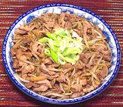

|
Pork, "Fish Flavor"China - Yuxiang Rou Si | ||||
| Serves: Effort: Sched: DoAhead: |
2 main *** 50 min Yes |
In the China, "Fish Flavor" doesn't mean there's any fish involved, or that it tastes at all like fish. It simply means the dish is cooked and seasoned simmilarly to how fish is done. For a somewhat more complex version see Pork Yuxiang. | |||
|
1 1/3 1/2 10 1 1/8 3 ------ 2 1 1/2 1-1/2 1-1/2 1 1/2 ------ 3 |
# t T oz cl in oz --- t t t T T T T --- T |
Pork, lean Salt Cornstarch Bean Sprouts Garlic Ginger Root Water Chestnuts -- Seasoning Water Cornstarch Sugar Soy Sauce Rice Vinegar Water Rice Wine ------------ Oil |
Prep - (40 min)
|